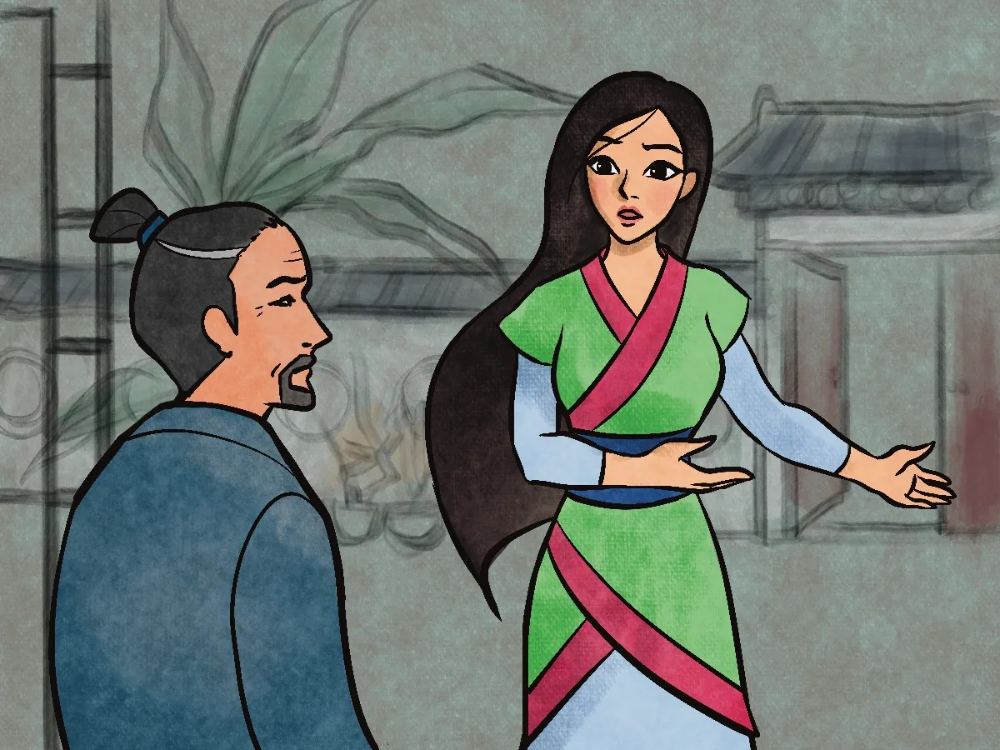

Many years ago, China was in the middle of a great war. The Emperor said that one man from each Chinese family must leave his family to join the army. Mulan, a teenage girl who lived in a faraway village of China, heard the news when she was outside washing clothes. Mulan ran into the house. Her father was sitting in a chair, carving a piece of wood. “Father!" she said. "Did you hear what the Emperor says each family must do?”
“Yes," said her old father, “I heard about it in town. Well, I may as well go pack up.” He put down his carving, stood up and walked very slowly to his room. “Wait!” said Mulan, “Father, you have not been well. If I may say so, why at your age must you keep up with all those young men?” “What else can be done?” said her father. “Your brother is a child. He cannot go.” “Of course that's true,” said Mulan. “He is too little. But I have an idea." She poured her father a cup of tea and handed it to him. "Father, have some tea. Please sit a minute. I will be right back.” "Very well, dear," said the father.
“Yes," said her old father, “I heard about it in town. Well, I may as well go pack up.” He put down his carving, stood up and walked very slowly to his room. “Wait!” said Mulan, “Father, you have not been well. If I may say so, why at your age must you keep up with all those young men?” “What else can be done?” said her father. “Your brother is a child. He cannot go.” “Of course that's true,” said Mulan. “He is too little. But I have an idea." She poured her father a cup of tea and handed it to him. "Father, have some tea. Please sit a minute. I will be right back.” "Very well, dear," said the father.
Mulan went into her room. With her sword, she cut off her long, black hair. She put on her father’s robe. Going back to her father, Mulan said, “Look at me. I am your son now. I will go in your place. I will do my part for China.” “No, my daughter!” said the old man. “You cannot do this!” “Father, listen please," said Mulan. “For years, you trained me in Kung Fu. You showed me how to use a sword.” Mulan swung the sword back and forth with might. “Only so that you could stay safe!” said her father. “I never meant for you to go to war. If they find out you are a woman, you know as well as I do that you will die!” “No one will find out, Father,” said Mulan. She picked up her sword.
"Mulan!" said the Father. He tried to get up but had to hold on to his chair. The daughter kissed him goodbye. "I love you, Father," she said. "Take care of yourself. Tell my brother I said goodbye." She climbed on a family horse. And off she went to join the Emperor’s army. In the army, Mulan proved to be a brave soldier. In time, she was put in charge of other soldiers.
Her battles went so well that she was put in charge of more soldiers. Her battles kept on going well. After a few years Mulan was given the top job - she would be General of the entire army. Not long after that, a very bad fever swept through the army. Many soldiers were sick. And Mulan became sick, too, the General of the army. When the doctor came out of Mulan's tent, he knew the truth. “The General is a woman?” yelled the soldiers.
“How can this be?” Some called out, “She tricked us!” and “We will not fight for a woman!” They said, “Punish her! Make her pay! The cost is for her to die!” But others called out, in voices just as loud, “With Mulan, we win every battle!” They said, “Stay away from our General!” Just then, a soldier ran up. “Everyone!" he called. "A surprise attack is coming!” Mulan heard this from inside her tent. She got dressed and went outside. She was not yet strong, but stood tall.
She told the soldiers where they must go to hide so they could attack when the enemy came. But they must get there fast! The soldiers, even those who did not like that their General was a woman, could tell that Mulan knew what she was talking about. It worked! The battle was won. It was such a big victory that the enemy gave up, at last. The war was over, and China was saved! You can be sure that after that last battle, no one cared anymore that Mulan was a woman. The Emperor was so glad that Mulan had ended the long war, he set aside the rule about being a woman. “Mulan, stay with me in the palace,” he said. “Someone as smart as you would be a fine royal adviser.”
Mulan bowed deeply. “You are too kind, Sire,” she said. “But if you please. What I wish most of all is to return home to my family.” “Then at least take these fine gifts,” said the Emperor. "So everyone at your home village will know how much the Emperor of China thinks of you."
Mulan returned to her village with six fine horses and six fine swords. Everyone cheered that she was safe. The person who had saved China was their very own Mulan!